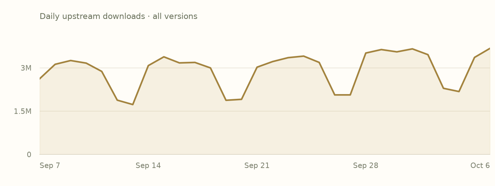
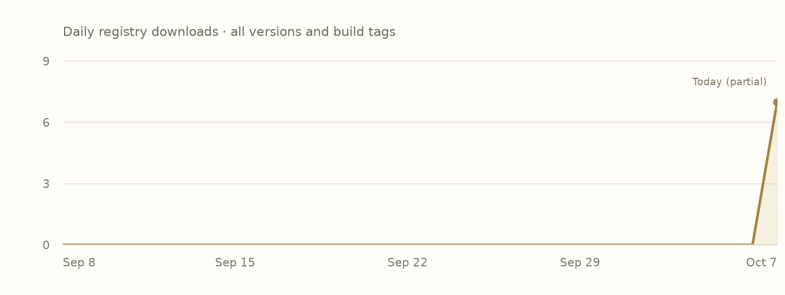

README
Recorded documentationUpstream documentation. Cargo examples describe the Rust crate; Add to project provides the Oven dependency.
README.md · Author-provided
Anyhow ¯\_(°ペ)_/¯
<img alt="github" src="https://img.shields.io/badge/github-dtolnay/anyhow-8da0cb?style=for-the-badge&labelColor=555555&logo=github" height="20"> <img alt="crates.io" src="https://img.shields.io/crates/v/anyhow.svg?style=for-the-badge&color=fc8d62&logo=rust" height="20"> <img alt="docs.rs" src="https://img.shields.io/badge/docs.rs-anyhow-66c2a5?style=for-the-badge&labelColor=555555&logo=docs.rs" height="20"> <img alt="build status" src="https://img.shields.io/github/actions/workflow/status/dtolnay/anyhow/ci.yml?branch=master&style=for-the-badge" height="20">
This library provides anyhow::Error, a trait object based error type
for easy idiomatic error handling in Rust applications.
[dependencies]
anyhow = "1.0"
<br>
Details
-
Use
Result<T, anyhow::Error>, or equivalentlyanyhow::Result<T>, as the return type of any fallible function.Within the function, use
?to easily propagate any error that implements thestd::error::Errortrait.use anyhow::Result; fn get_cluster_info() -> Result<ClusterMap> { let config = std::fs::read_to_string("cluster.json")?; let map: ClusterMap = serde_json::from_str(&config)?; Ok(map) } -
Attach context to help the person troubleshooting the error understand where things went wrong. A low-level error like "No such file or directory" can be annoying to debug without more context about what higher level step the application was in the middle of.
use anyhow::{Context, Result}; fn main() -> Result<()> { ... it.detach().context("Failed to detach the important thing")?; let content = std::fs::read(path) .with_context(|| format!("Failed to read instrs from {}", path))?; ... }Error: Failed to read instrs from ./path/to/instrs.json Caused by: No such file or directory (os error 2) -
Downcasting is supported and can be by value, by shared reference, or by mutable reference as needed.
// If the error was caused by redaction, then return a // tombstone instead of the content. match root_cause.downcast_ref::<DataStoreError>() { Some(DataStoreError::Censored(_)) => Ok(Poll::Ready(REDACTED_CONTENT)), None => Err(error), } -
If using Rust ≥ 1.65, a backtrace is captured and printed with the error if the underlying error type does not already provide its own. In order to see backtraces, they must be enabled through the environment variables described in
std::backtrace:- If you want panics and errors to both have backtraces, set
RUST_BACKTRACE=1; - If you want only errors to have backtraces, set
RUST_LIB_BACKTRACE=1; - If you want only panics to have backtraces, set
RUST_BACKTRACE=1andRUST_LIB_BACKTRACE=0.
- If you want panics and errors to both have backtraces, set
-
Anyhow works with any error type that has an impl of
std::error::Error, including ones defined in your crate. We do not bundle aderive(Error)macro but you can write the impls yourself or use a standalone macro like thiserror.use thiserror::Error; #[derive(Error, Debug)] pub enum FormatError { #[error("Invalid header (expected {expected:?}, got {found:?})")] InvalidHeader { expected: String, found: String, }, #[error("Missing attribute: {0}")] MissingAttribute(String), } -
One-off error messages can be constructed using the
anyhow!macro, which supports string interpolation and produces ananyhow::Error.return Err(anyhow!("Missing attribute: {}", missing));A
bail!macro is provided as a shorthand for the same early return.bail!("Missing attribute: {}", missing);
<br>
No-std support
In no_std mode, almost all of the same API is available and works the same way. To depend on Anyhow in no_std mode, disable our default enabled "std" feature in Cargo.toml. A global allocator is required.
[dependencies]
anyhow = { version = "1.0", default-features = false }
With versions of Rust older than 1.81, no_std mode may require an additional
.map_err(Error::msg) when working with a non-Anyhow error type inside a
function that returns Anyhow's error type, as the trait that ?-based error
conversions are defined by is only available in std in those old versions.
<br>
Comparison to failure
The anyhow::Error type works something like failure::Error, but unlike
failure ours is built around the standard library's std::error::Error trait
rather than a separate trait failure::Fail. The standard library has adopted
the necessary improvements for this to be possible as part of RFC 2504.
<br>
Comparison to thiserror
Use Anyhow if you don't care what error type your functions return, you just want it to be easy. This is common in application code. Use thiserror if you are a library that wants to design your own dedicated error type(s) so that on failures the caller gets exactly the information that you choose.
<br>
License
<sup> Licensed under either of <a href="LICENSE-APACHE">Apache License, Version 2.0</a> or <a href="LICENSE-MIT">MIT license</a> at your option. </sup>
<br>
<sub> Unless you explicitly state otherwise, any contribution intentionally submitted for inclusion in this crate by you, as defined in the Apache-2.0 license, shall be dual licensed as above, without any additional terms or conditions. </sub>
Features
Declared activationDefault activation follows the complete local feature graph. Forwarded edges remain declarations, not a resolved build.
| Feature | Default | Activation edges |
|---|---|---|
backtrace | No |
|
default | Yesdefault |
|
std | Yesdefault → std |
|
Dependencies
Version requirementsNo dependencies declared.
Dependents
Whole indexDirect declarations from all indexed versions. Requirements and target/feature conditions may select a different version than the one shown here.
- crates-io/av-scenechange 0.14.1Requires ^1.0.56 · alias anyhow ·
- crates-io/av1-grain 0.2.5Requires ^1.0.58 · alias anyhow ·
- crates-io/cranelift-codegen 0.123.17Requires ^1.0.93 · alias anyhow ·
- crates-io/ittapi 0.4.0Requires ^1.0.56 · alias anyhow ·
- crates-io/prost-derive 0.14.4Requires ^1.0.1 · alias anyhow ·
- crates-io/pulley-interpreter 36.0.17Requires ^1.0.93 · alias anyhow ·
- crates-io/pyo3 0.29.3Requires ^1.0.1 · alias anyhow ·
- crates-io/ra_ap_load-cargo 0.0.325Requires ^1.0.98 · alias anyhow ·
- crates-io/ra_ap_project_model 0.0.325Requires ^1.0.98 · alias anyhow ·
- crates-io/wasm-metadata 0.261.0Requires ^1.0.58 · alias anyhow ·
- crates-io/wasm-metadata 0.259.0Requires ^1.0.58 · alias anyhow ·
- crates-io/wasm-metadata 0.247.0Requires ^1.0.58 · alias anyhow ·
- crates-io/wasm-metadata 0.244.0Requires ^1.0.58 · alias anyhow ·
- crates-io/wasmprinter 0.236.1Requires ^1.0.58 · alias anyhow ·
- crates-io/wasmtime 36.0.17Requires ^1.0.93 · alias anyhow ·
- crates-io/wasmtime-environ 36.0.17Requires ^1.0.93 · alias anyhow ·
- crates-io/wasmtime-internal-cache 36.0.17Requires ^1.0.93 · alias anyhow ·
- crates-io/wasmtime-internal-component-macro 36.0.17Requires ^1.0.93 · alias anyhow ·
- crates-io/wasmtime-internal-cranelift 36.0.17Requires ^1.0.93 · alias anyhow ·
- crates-io/wasmtime-internal-fiber 36.0.17Requires ^1.0.93 · alias anyhow ·
- crates-io/wasmtime-internal-jit-icache-coherence 36.0.17Requires ^1.0.93 · alias anyhow ·
- crates-io/wasmtime-internal-unwinder 36.0.17Requires ^1.0.93 · alias anyhow ·
- crates-io/wasmtime-internal-wit-bindgen 36.0.17Requires ^1.0.93 · alias anyhow ·
- crates-io/wasmtime-wasi 36.0.17Requires ^1.0.93 · alias anyhow ·
- crates-io/wasmtime-wasi-io 36.0.17Requires ^1.0.93 · alias anyhow ·
- crates-io/wiggle 36.0.17Requires ^1.0.93 · alias anyhow ·
- crates-io/wiggle-generate 36.0.17Requires ^1.0.93 · alias anyhow ·
- crates-io/wit-bindgen-core 0.62.0Requires ^1.0.102 · alias anyhow ·
- crates-io/wit-bindgen-core 0.57.1Requires ^1.0.102 · alias anyhow ·
- crates-io/wit-bindgen-core 0.51.0Requires ^1.0.72 · alias anyhow ·
- crates-io/wit-bindgen-rust 0.62.0Requires ^1.0.102 · alias anyhow ·
- crates-io/wit-bindgen-rust 0.57.1Requires ^1.0.102 · alias anyhow ·
- crates-io/wit-bindgen-rust 0.51.0Requires ^1.0.72 · alias anyhow ·
- crates-io/wit-bindgen-rust-macro 0.62.0Requires ^1.0.102 · alias anyhow ·
- crates-io/wit-bindgen-rust-macro 0.57.1Requires ^1.0.102 · alias anyhow ·
- crates-io/wit-bindgen-rust-macro 0.51.0Requires ^1.0.72 · alias anyhow ·
- crates-io/wit-component 0.261.0Requires ^1.0.58 · alias anyhow ·
- crates-io/wit-component 0.259.0Requires ^1.0.58 · alias anyhow ·
- crates-io/wit-component 0.247.0Requires ^1.0.58 · alias anyhow ·
- crates-io/wit-component 0.244.0Requires ^1.0.58 · alias anyhow ·
- crates-io/wit-parser 0.261.0Requires ^1.0.58 · alias anyhow ·
- crates-io/wit-parser 0.259.0Requires ^1.0.58 · alias anyhow ·
- crates-io/wit-parser 0.247.0Requires ^1.0.58 · alias anyhow ·
- crates-io/wit-parser 0.244.0Requires ^1.0.58 · alias anyhow ·
- crates-io/wit-parser 0.236.1Requires ^1.0.58 · alias anyhow ·
- crates-io/witx 0.9.1Requires ^1 · alias anyhow ·
Indexed builds
Bound assetsExact indexed bindings; units retain their individual identities. Attestation links are registry references, not an independent signature verification by this site.
| Target / profile | Toolchain / features | Evidence |
|---|---|---|
aarch64-apple-darwindebug | rustc 1.98.0 (88d9e12ae 2026-08-18) | Inspect units
|
aarch64-apple-darwindebug | rustc 1.98.0 (88d9e12ae 2026-08-18)default, std | Inspect units
|
aarch64-apple-darwinrelease | rustc 1.98.0 (88d9e12ae 2026-08-18) | Inspect units
|
aarch64-apple-darwinrelease | rustc 1.98.0 (88d9e12ae 2026-08-18)default, std | Inspect units
|
x86_64-unknown-linux-gnudebug | rustc 1.98.0 (88d9e12ae 2026-08-18) | Inspect units
|
x86_64-unknown-linux-gnudebug | rustc 1.98.0 (88d9e12ae 2026-08-18)default, std | Inspect units
|
x86_64-unknown-linux-gnurelease | rustc 1.98.0 (88d9e12ae 2026-08-18) | Inspect units
|
x86_64-unknown-linux-gnurelease | rustc 1.98.0 (88d9e12ae 2026-08-18)default, std | Inspect units
|
Recorded build-fact bindings
| Target | Profile | Status | Features |
|---|---|---|---|
| aarch64-apple-darwin | debug | harvested | |
| aarch64-apple-darwin | debug | harvested | default, std |
| aarch64-apple-darwin | release | harvested | |
| aarch64-apple-darwin | release | harvested | default, std |
| x86_64-unknown-linux-gnu | debug | harvested | |
| x86_64-unknown-linux-gnu | debug | harvested | default, std |
| x86_64-unknown-linux-gnu | release | harvested | |
| x86_64-unknown-linux-gnu | release | harvested | default, std |
Versions & release notes
Indexed versionsDates below record adoption into the registry, not upstream publication. Changelogs are shown as packaged; they can cover multiple releases.
| Version | Adopted | Upstream |
|---|---|---|
| 1.0.104 | 2026-10-06 | Upstream record |
| 1.0.102 | 2026-10-07 | Upstream record |
No changelog document is recorded for this version.
License documents
Recorded filesDeclared license: MIT OR Apache-2.0
LICENSE-APACHE · Author-provided
Apache License
Version 2.0, January 2004
http://www.apache.org/licenses/
TERMS AND CONDITIONS FOR USE, REPRODUCTION, AND DISTRIBUTION
1. Definitions.
"License" shall mean the terms and conditions for use, reproduction,
and distribution as defined by Sections 1 through 9 of this document.
"Licensor" shall mean the copyright owner or entity authorized by
the copyright owner that is granting the License.
"Legal Entity" shall mean the union of the acting entity and all
other entities that control, are controlled by, or are under common
control with that entity. For the purposes of this definition,
"control" means (i) the power, direct or indirect, to cause the
direction or management of such entity, whether by contract or
otherwise, or (ii) ownership of fifty percent (50%) or more of the
outstanding shares, or (iii) beneficial ownership of such entity.
"You" (or "Your") shall mean an individual or Legal Entity
exercising permissions granted by this License.
"Source" form shall mean the preferred form for making modifications,
including but not limited to software source code, documentation
source, and configuration files.
"Object" form shall mean any form resulting from mechanical
transformation or translation of a Source form, including but
not limited to compiled object code, generated documentation,
and conversions to other media types.
"Work" shall mean the work of authorship, whether in Source or
Object form, made available under the License, as indicated by a
copyright notice that is included in or attached to the work
(an example is provided in the Appendix below).
"Derivative Works" shall mean any work, whether in Source or Object
form, that is based on (or derived from) the Work and for which the
editorial revisions, annotations, elaborations, or other modifications
represent, as a whole, an original work of authorship. For the purposes
of this License, Derivative Works shall not include works that remain
separable from, or merely link (or bind by name) to the interfaces of,
the Work and Derivative Works thereof.
"Contribution" shall mean any work of authorship, including
the original version of the Work and any modifications or additions
to that Work or Derivative Works thereof, that is intentionally
submitted to Licensor for inclusion in the Work by the copyright owner
or by an individual or Legal Entity authorized to submit on behalf of
the copyright owner. For the purposes of this definition, "submitted"
means any form of electronic, verbal, or written communication sent
to the Licensor or its representatives, including but not limited to
communication on electronic mailing lists, source code control systems,
and issue tracking systems that are managed by, or on behalf of, the
Licensor for the purpose of discussing and improving the Work, but
excluding communication that is conspicuously marked or otherwise
designated in writing by the copyright owner as "Not a Contribution."
"Contributor" shall mean Licensor and any individual or Legal Entity
on behalf of whom a Contribution has been received by Licensor and
subsequently incorporated within the Work.
2. Grant of Copyright License. Subject to the terms and conditions of
this License, each Contributor hereby grants to You a perpetual,
worldwide, non-exclusive, no-charge, royalty-free, irrevocable
copyright license to reproduce, prepare Derivative Works of,
publicly display, publicly perform, sublicense, and distribute the
Work and such Derivative Works in Source or Object form.
3. Grant of Patent License. Subject to the terms and conditions of
this License, each Contributor hereby grants to You a perpetual,
worldwide, non-exclusive, no-charge, royalty-free, irrevocable
(except as stated in this section) patent license to make, have made,
use, offer to sell, sell, import, and otherwise transfer the Work,
where such license applies only to those patent claims licensable
by such Contributor that are necessarily infringed by their
Contribution(s) alone or by combination of their Contribution(s)
with the Work to which such Contribution(s) was submitted. If You
institute patent litigation against any entity (including a
cross-claim or counterclaim in a lawsuit) alleging that the Work
or a Contribution incorporated within the Work constitutes direct
or contributory patent infringement, then any patent licenses
granted to You under this License for that Work shall terminate
as of the date such litigation is filed.
4. Redistribution. You may reproduce and distribute copies of the
Work or Derivative Works thereof in any medium, with or without
modifications, and in Source or Object form, provided that You
meet the following conditions:
(a) You must give any other recipients of the Work or
Derivative Works a copy of this License; and
(b) You must cause any modified files to carry prominent notices
stating that You changed the files; and
(c) You must retain, in the Source form of any Derivative Works
that You distribute, all copyright, patent, trademark, and
attribution notices from the Source form of the Work,
excluding those notices that do not pertain to any part of
the Derivative Works; and
(d) If the Work includes a "NOTICE" text file as part of its
distribution, then any Derivative Works that You distribute must
include a readable copy of the attribution notices contained
within such NOTICE file, excluding those notices that do not
pertain to any part of the Derivative Works, in at least one
of the following places: within a NOTICE text file distributed
as part of the Derivative Works; within the Source form or
documentation, if provided along with the Derivative Works; or,
within a display generated by the Derivative Works, if and
wherever such third-party notices normally appear. The contents
of the NOTICE file are for informational purposes only and
do not modify the License. You may add Your own attribution
notices within Derivative Works that You distribute, alongside
or as an addendum to the NOTICE text from the Work, provided
that such additional attribution notices cannot be construed
as modifying the License.
You may add Your own copyright statement to Your modifications and
may provide additional or different license terms and conditions
for use, reproduction, or distribution of Your modifications, or
for any such Derivative Works as a whole, provided Your use,
reproduction, and distribution of the Work otherwise complies with
the conditions stated in this License.
5. Submission of Contributions. Unless You explicitly state otherwise,
any Contribution intentionally submitted for inclusion in the Work
by You to the Licensor shall be under the terms and conditions of
this License, without any additional terms or conditions.
Notwithstanding the above, nothing herein shall supersede or modify
the terms of any separate license agreement you may have executed
with Licensor regarding such Contributions.
6. Trademarks. This License does not grant permission to use the trade
names, trademarks, service marks, or product names of the Licensor,
except as required for reasonable and customary use in describing the
origin of the Work and reproducing the content of the NOTICE file.
7. Disclaimer of Warranty. Unless required by applicable law or
agreed to in writing, Licensor provides the Work (and each
Contributor provides its Contributions) on an "AS IS" BASIS,
WITHOUT WARRANTIES OR CONDITIONS OF ANY KIND, either express or
implied, including, without limitation, any warranties or conditions
of TITLE, NON-INFRINGEMENT, MERCHANTABILITY, or FITNESS FOR A
PARTICULAR PURPOSE. You are solely responsible for determining the
appropriateness of using or redistributing the Work and assume any
risks associated with Your exercise of permissions under this License.
8. Limitation of Liability. In no event and under no legal theory,
whether in tort (including negligence), contract, or otherwise,
unless required by applicable law (such as deliberate and grossly
negligent acts) or agreed to in writing, shall any Contributor be
liable to You for damages, including any direct, indirect, special,
incidental, or consequential damages of any character arising as a
result of this License or out of the use or inability to use the
Work (including but not limited to damages for loss of goodwill,
work stoppage, computer failure or malfunction, or any and all
other commercial damages or losses), even if such Contributor
has been advised of the possibility of such damages.
9. Accepting Warranty or Additional Liability. While redistributing
the Work or Derivative Works thereof, You may choose to offer,
and charge a fee for, acceptance of support, warranty, indemnity,
or other liability obligations and/or rights consistent with this
License. However, in accepting such obligations, You may act only
on Your own behalf and on Your sole responsibility, not on behalf
of any other Contributor, and only if You agree to indemnify,
defend, and hold each Contributor harmless for any liability
incurred by, or claims asserted against, such Contributor by reason
of your accepting any such warranty or additional liability.
END OF TERMS AND CONDITIONS
sha256:62c7a1e35f56406896d7aa7ca52d0cc0d272ac022b5d2796e7d6905db8a3636a
LICENSE-MIT · Author-provided
Permission is hereby granted, free of charge, to any
person obtaining a copy of this software and associated
documentation files (the "Software"), to deal in the
Software without restriction, including without
limitation the rights to use, copy, modify, merge,
publish, distribute, sublicense, and/or sell copies of
the Software, and to permit persons to whom the Software
is furnished to do so, subject to the following
conditions:
The above copyright notice and this permission notice
shall be included in all copies or substantial portions
of the Software.
THE SOFTWARE IS PROVIDED "AS IS", WITHOUT WARRANTY OF
ANY KIND, EXPRESS OR IMPLIED, INCLUDING BUT NOT LIMITED
TO THE WARRANTIES OF MERCHANTABILITY, FITNESS FOR A
PARTICULAR PURPOSE AND NONINFRINGEMENT. IN NO EVENT
SHALL THE AUTHORS OR COPYRIGHT HOLDERS BE LIABLE FOR ANY
CLAIM, DAMAGES OR OTHER LIABILITY, WHETHER IN AN ACTION
OF CONTRACT, TORT OR OTHERWISE, ARISING FROM, OUT OF OR
IN CONNECTION WITH THE SOFTWARE OR THE USE OR OTHER
DEALINGS IN THE SOFTWARE.
sha256:23f18e03dc49df91622fe2a76176497404e46ced8a715d9d2b67a7446571cca3
Popularity
Separate observationsHistorical observations across all versions, not unique users or installs. Statistics refresh independently of the index.
Daily values · crates.io · upstream
| UTC date | Downloads |
|---|---|
| 2026-09-07 | 2619927 |
| 2026-09-08 | 3121527 |
| 2026-09-09 | 3252485 |
| 2026-09-10 | 3162638 |
| 2026-09-11 | 2875638 |
| 2026-09-12 | 1879323 |
| 2026-09-13 | 1726927 |
| 2026-09-14 | 3076998 |
| 2026-09-15 | 3380561 |
| 2026-09-16 | 3170447 |
| 2026-09-17 | 3186519 |
| 2026-09-18 | 2996584 |
| 2026-09-19 | 1874981 |
| 2026-09-20 | 1907890 |
| 2026-09-21 | 3021922 |
| 2026-09-22 | 3215783 |
| 2026-09-23 | 3351566 |
| 2026-09-24 | 3405300 |
| 2026-09-25 | 3186670 |
| 2026-09-26 | 2061311 |
| 2026-09-27 | 2061188 |
| 2026-09-28 | 3511656 |
| 2026-09-29 | 3632313 |
| 2026-09-30 | 3553335 |
| 2026-10-01 | 3656555 |
| 2026-10-02 | 3456203 |
| 2026-10-03 | 2289962 |
| 2026-10-04 | 2177511 |
| 2026-10-05 | 3360044 |
| 2026-10-06 | 3675165 |
crates.io · upstream
8784892930 complete UTC days · all versions

Captured 2026-10-07T10:29:14.121674000Z · Source
Daily values · Incan registry · GitHub Packages
| UTC date | Downloads |
|---|---|
| 2026-09-08 | 0 |
| 2026-09-09 | 0 |
| 2026-09-10 | 0 |
| 2026-09-11 | 0 |
| 2026-09-12 | 0 |
| 2026-09-13 | 0 |
| 2026-09-14 | 0 |
| 2026-09-15 | 0 |
| 2026-09-16 | 0 |
| 2026-09-17 | 0 |
| 2026-09-18 | 0 |
| 2026-09-19 | 0 |
| 2026-09-20 | 0 |
| 2026-09-21 | 0 |
| 2026-09-22 | 0 |
| 2026-09-23 | 0 |
| 2026-09-24 | 0 |
| 2026-09-25 | 0 |
| 2026-09-26 | 0 |
| 2026-09-27 | 0 |
| 2026-09-28 | 0 |
| 2026-09-29 | 0 |
| 2026-09-30 | 0 |
| 2026-10-01 | 0 |
| 2026-10-02 | 0 |
| 2026-10-03 | 0 |
| 2026-10-04 | 0 |
| 2026-10-05 | 0 |
| 2026-10-06 | 0 |
| 2026-10-07 | 7 |
The last registry day is a partial UTC day.
Incan registry · GitHub Packages
7All-time pulls · all build tags

Captured 2026-10-07T10:29:14.121674000Z · Source
Security
CoverageYanked: No. Registry advisory records: 0.
An upstream vulnerability feed has not been collected. No advisories here does not establish that a package is free of vulnerabilities.
Provenance
Pinned evidence- Index checkpoint
- 18c77d028d27bcd9bb4f7c951834521236c93e4b
- Source Loaf
sha256:55cad1a57bb9dd17011cc90f3dc3fa42e4c5dcf2b6b85e56b25ddd7e0dc8cec4- Upstream checksum
sha256:330a5ed07fa54e4702c9d6c4174f74427fc0ef6e214bbd677ae50a5099946470- Adopted by
- encero-systems/incan.pub maintainers
Recorded loaf.toml
# harvested from the release capture at b1a5c57
#
# Projection of the incan.pub event log; regenerate with `incan-pub build`, never edit.
[project]
name = "crates-io/anyhow"
version = "1.0.104"
[project.features]
backtrace = []
default = ["std"]
std = []
[rust]
name = "anyhow"
type = "lib"
edition = "2021"
build-script = true
[[rust.facts]]
toolchain = "rustc 1.98.0 (88d9e12ae 2026-08-18)"
target = "aarch64-apple-darwin"
profile = "debug"
features = []
cfg = []
[[rust.facts]]
toolchain = "rustc 1.98.0 (88d9e12ae 2026-08-18)"
target = "aarch64-apple-darwin"
profile = "debug"
features = ["default", "std"]
cfg = []
[[rust.facts]]
toolchain = "rustc 1.98.0 (88d9e12ae 2026-08-18)"
target = "aarch64-apple-darwin"
profile = "release"
features = []
cfg = []
[[rust.facts]]
toolchain = "rustc 1.98.0 (88d9e12ae 2026-08-18)"
target = "aarch64-apple-darwin"
profile = "release"
features = ["default", "std"]
cfg = []
harvested-from = "sha256:c16ad44b089ea95b80a8268b1b4bea9659316cff539b72898eb9c185fceda78c"
[[rust.facts]]
toolchain = "rustc 1.98.0 (88d9e12ae 2026-08-18)"
target = "x86_64-unknown-linux-gnu"
profile = "debug"
features = []
cfg = []
[[rust.facts]]
toolchain = "rustc 1.98.0 (88d9e12ae 2026-08-18)"
target = "x86_64-unknown-linux-gnu"
profile = "debug"
features = ["default", "std"]
cfg = []
[[rust.facts]]
toolchain = "rustc 1.98.0 (88d9e12ae 2026-08-18)"
target = "x86_64-unknown-linux-gnu"
profile = "release"
features = []
cfg = []
[[rust.facts]]
toolchain = "rustc 1.98.0 (88d9e12ae 2026-08-18)"
target = "x86_64-unknown-linux-gnu"
profile = "release"
features = ["default", "std"]
cfg = []